Copyright © 2015 Powered by MWeb, Theme used GitHub CSS.
Java虚拟机规定用u1、u2、u4三种数据结构来表示1、2、4字节无符号整数，相同类型的若干条数据集合用表(table)的形式来存储。表是一个变长的结构，由代表长度的表头n和紧随着的n个数据项组成。class文件采用类似C语言的结构体来存储数据，如下所示
# 类
classFile {
u4 magic;
u2 minor_version;
u2 major_version;
u2 constant_pool_count;
cp_info constant_pool[ constant_pool_count - 1];
u2 access_flags;
u2 this_class;
u2 super_class;
u2 interfaces_count;
u2 interfaces[ interfaces_count];
u2 fields_count;
field_info fields[ fields_count];
u2 methods_count;
method_info methods[ methods_count];
u2 attributes_count;
attribute_info attributes[ attributes_count];
}
# 字段
field_info {
u2 access_flags;
u2 name_index;
u2 descriptor_index;
u2 attributes_count;
attribute_info attributes[attributes_count];
}
# 方法
method_info {
u2 access_flags;
u2 name_index;
u2 descriptor_index;
u2 attributes_count;
attribute_info attributes[attributes_count];
}
# 方法当中方法体
Code_attribute {
u2 attribute_name_index;
u4 attribute_length;
u2 max_stack;
u2 max_locals;
u4 code_length;
u1 code[code_length];
u2 exception_table_length;
{ u2 start_pc;
u2 end_pc;
u2 handler_pc;
u2 catch_type;
} exception_table[exception_table_length];
u2 attributes_count;
attribute_info attributes[attributes_count];
}
class文件由下面十个部分组成:
人们经常通过文件名后缀来识别文件类型，比如看到一个.jpg后缀的文件，我们就知道这是一个jpg图片文件。但使用文件名后缀来区分文件类型很不靠谱，后缀可以被随便修改，那如何根据文件内容本身来标识文件的类型呢？可以用魔数（Magic Number）实现。
很多文件都以固定的几字节开头作为魔数，比如PDF文件的魔数是 %PDF-（十六进制0x255044462D）, png文件的魔数是 \x89PNG（十六进制0x89504E47）。文件格式的制定者可以自由地选择魔数值，只要魔数值还没有被广泛采用过且不会引起混淆即可。
使用十六进制工具打开class文件，首先看到的是充满浪漫气息的魔数0xCAFEBABE（咖啡宝贝），从Java的图标也可以看出，Java从诞生之初就和咖啡这个词有千丝万缕的关系。class文件的魔数如图1-5所示。
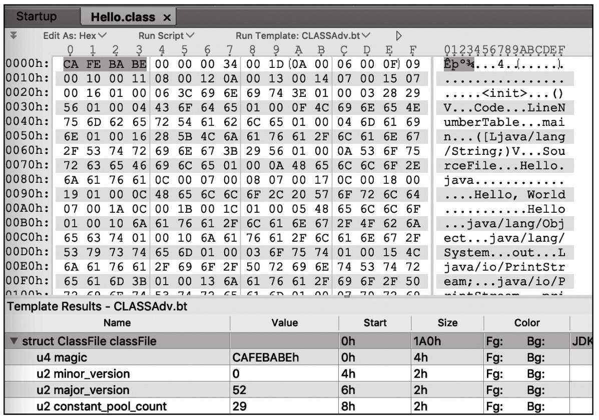
魔数0xCAFEBABE是JVM识别．class文件的标志，虚拟机在加载类文件之前会先检查这4个字节，如果不是0xCAFEBABE，则会抛出java.lang.ClassFormatError异常。
在魔数之后的四个字节分别表示副版本号（Minor Version）和主版本号（MajorVersion）,如图1-7所示。
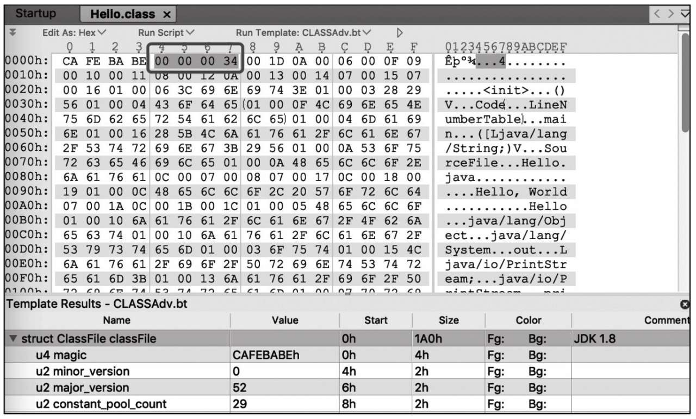
这里的主版本号是52（0x34），虚拟机解析这个类时就知道这是一个Java 8编译出的类，如果类文件的版本号高于JVM自身的版本号，加载该类会被直接抛出java.lang. UnsupportedClassVersionError异常。
每次Java发布大版本，主版本会加1，目前常用的Java主版本号对应的关系如表1-1所示。
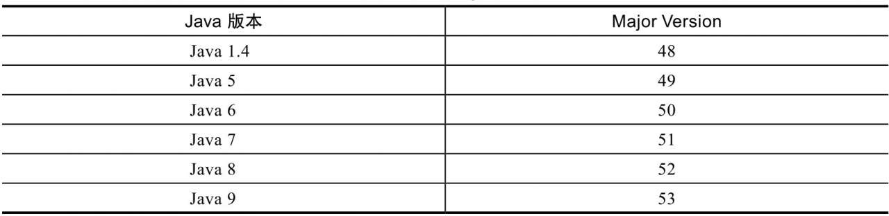
紧随版本号之后的是常量池数据区域，常量池是类文件中最复杂的数据结构。对于JVM字节码来说，如果操作数是很常用的数字，比如0，这些操作数是内嵌到字节码中的。如果是字符串常量和较大的整数等，class文件则会把这些操作数存储在常量池（Constant Pool）中，当使用这些操作数时，会根据常量池的索引位置来查找。
常量池的作用类似于C语言中的符号表（Symbol Table），但是比符号表要强大很多。常量池结构如下面的代码所示。
struct {
u2 constant_pool_count;
cp_info constant_pool[constant_pool_count-1];
}
由上面的伪代码可知，常量池分为两部分。
常量池组成结构如图1-9所示。
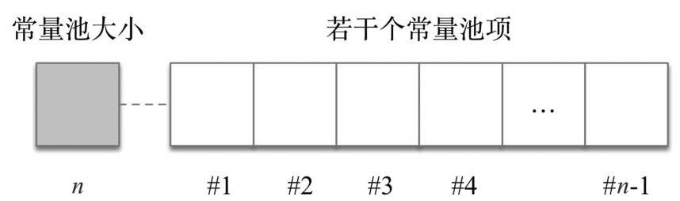
常量池中的每个常量项cp_info的数据结构如下面的伪代码所示。
cp_info {
u1 tag;
u1 info[];
}
每个cp_info的第一个字节表示常量项的类型（tag），接下来的几个字节表示常量项的具体内容。
Java虚拟机目前一共定义了14种常量项tag类型，这些常量名都以CONSTANT开头，以info结尾，如表1-2所示。
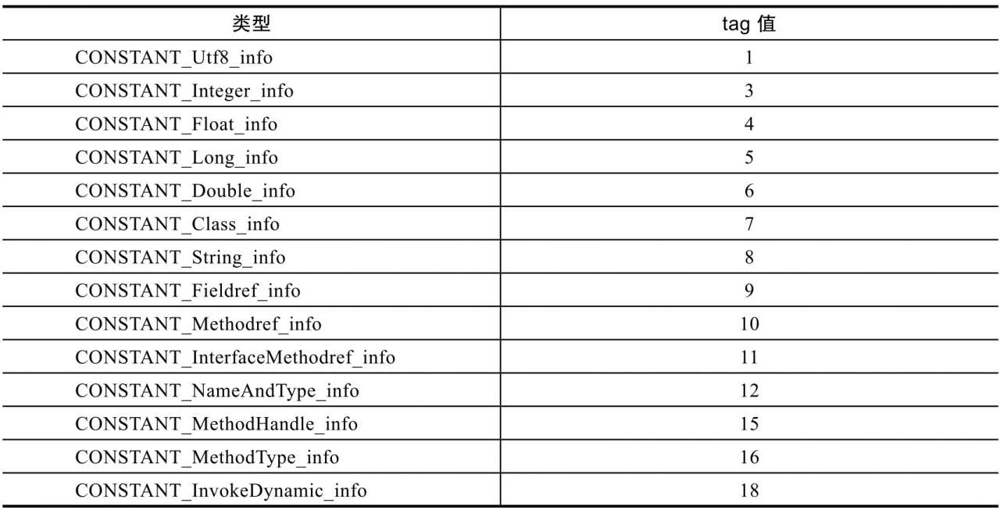
如果想查看类文件的常量池，可以在javap命令中加上 -v选项，如下所示。
javap -v HelloWorld
Constant pool:
#1 = Methodref #6.#15 // java/lang/Object."<init>":()V
#2 = Fieldref #16.#17 // java/lang/System.out:Ljava/io/PrintStream;
#3 = String #18 // Hello, World
...
#27 = Utf8 println
#28 = Utf8 (Ljava/lang/String; )V
CONSTANT_Integer_info和CONSTANT_Float_info这两种结构分别用来表示int和float类型的常量，两者的结构很类似，都用4个字节来表示具体的数值常量，它们的结构定义如下所示。
CONSTANT_Integer_info {
u1 tag;
u4 bytes;
}
CONSTANT_Float_info {
u1 tag;
u4 bytes;
}
以整型常量18（0x12）为例，它在常量池中的布局结构为如图1-10所示。

其中第一个字节0x03表示常量的类型为CONSTANT_Integer_info，接下来的四个字节是整型常量的值0x12。
CONSTANT_Long_info和CONSTANT_Double_info这两种结构分别用来表示long和double类型的常量，二者都用8个字节表示具体的常量数值，它们的结构如下面的代码所示。
CONSTANT_Long_info {
u1 tag;
u4 high_bytes;
u4 low_bytes;
}
CONSTANT_Double_info {
u1 tag;
u4 high_bytes;
u4 low_bytes;
}
以下面代码中的long型常量a为例。
public class HelloWorldMain {
public final long a = Long.MAX_VALUE;
}
对应的结构如图1-12所示。
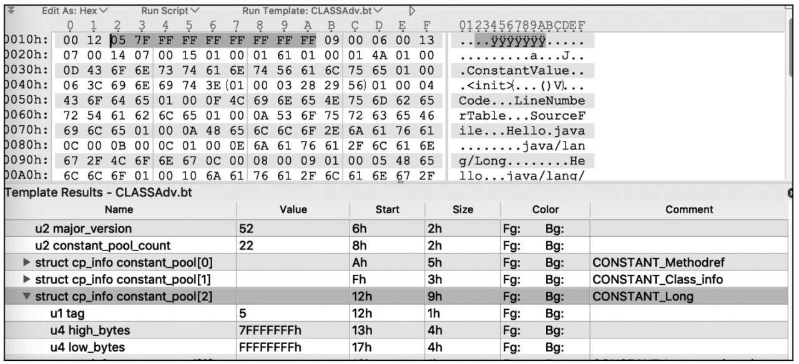
其中第1个字节0 x05表示常量的类型为CONSTANT_Long_info，接下来的8个字节是long型常量的值Long.MAX_VALUE。
使用javap输出的常量池信息如下所示。
Constant pool:
#1 = Methodref #7.#17 // java/lang/Object."<init>":()V
#2 = Class #18 // java/lang/Long
#3 = Long 9223372036854775807l
#5 = Fieldref #6.#19 // Hello.a:J
// ... 省略部分常量项
#21 = Utf8 java/lang/Object
前面提到过，CONSTANT_Long_info和CONSTANT_Double_info占用两个常量池位置，可以看到常量池大小为22，常量a占用了 #3和 #4两个位置，下一个常量项Fieldref从索引值5开始，如图1-13所示。
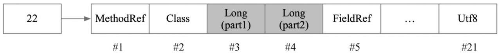
CONSTANT_Utf8_info存储了字符串的内容，结构如下所示。
CONSTANT_Utf8_info {
u1 tag;
u2 length;
u1 bytes[length];
}
它由三部分构成：第一个字节是tag，值为固定值1; tag之后的两个字节length并不是表示字符串有多少个字符，而是表示第三部分byte数组的长度；第三部分是采用MUTF-8编码的长度为length的字节数组。
如果要存储的字符串是"hello"，存储结构如图1-14所示。
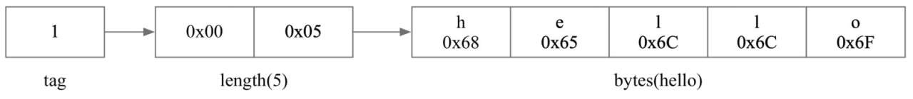
CONSTANT_String_info用来表示java.lang.String类型的常量对象。它与CONSTANT_Utf8_info的区别是CONSTANT_Utf8_info存储了字符串真正的内容，而CONSTANT_String_info并不包含字符串的内容，仅仅包含一个指向常量池中CONSTANT_Utf8_info常量类型的索引。
CONSTANT_String_info用来表示java.lang.String类型的常量对象。它与CONSTANT_Utf8_info的区别是CONSTANT_Utf8_info存储了字符串真正的内容，而CONSTANT_String_info并不包含字符串的内容，仅仅包含一个指向常量池中CONSTANT_Utf8_info常量类型的索引。
CONSTANT_String_info {
u1 tag;
u2 string_index;
}
以下面代码中的字符串a为例。
public class Hello {
private String a = "hello";
}
这一部分在class文件中对应的区域如图1-17所示。
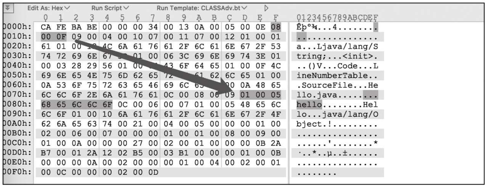
对应的CONSTANT_String_info的存储布局方式如图1-18所示
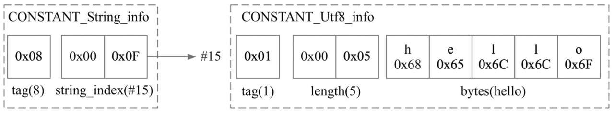
CONSTANT_Class_info结构用来表示类或接口，它的结构与CONSTANT_String_info非常类似，可用下面的伪代码表示。
CONSTANT_Class_info {
u1 tag;
u2 name_index;
}
它由两部分组成，第一个字节是tag，值固定为7 , tag后面的两个字节name_index是一个常量池索引，指向CONSTANT_Utf8_info常量，这个字符串存储的是类或接口的全限定名，如图1-19所示。

CONSTANT_NameAndType_info结构用来表示字段或者方法，可以用下面的伪代码表示。
CONSTANT_NameAndType_info{
u1 tag;
u2 name_index;
u2 descriptor_index;
}
CONSTANT_NameAndType_info结构由三部分组成，
以下面代码中的testMethod为例。
public void testMethod(int id, String name) {
}
对应的CONSTANT_NameAndType_info的结构布局示意图如图1-20所示。
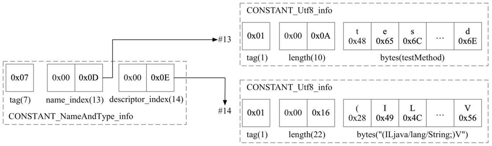
这三种常量类型结构比较类似，结构用伪代码表示如下。
CONSTANT_Fieldref_info {
u1 tag;
u2 class_index;
u2 name_and_type_index;
}
CONSTANT_Methodref_info {
u1 tag;
u2 class_index;
u2 name_and_type_index;
}
CONSTANT_InterfaceMethodref_info {
u1 tag;
u2 class_index;
u2 name_and_type_index;
}
下面以CONSTANT_Methodref_info为例来进行讲解，它用来描述一个方法。它由三部分组成：
public class HelloWorldMain {
public static void main(String[] args) {
new HelloWorldMain().testMethod(1, "hi");
}
public void testMethod(int id, String name) {
}
}
Constant pool:
#2 = Class #18 // HelloWorldMain
#5 = Methodref #2.#20 // HelloWorldMain.testMethod:(ILjava/lang/String; )V
#20 = NameAndType #13:#14 // testMethod:(ILjava/lang/String; )V
testMethod对应的Methodref的class_index为2，指向类名为“HelloWorldMain”的类，name_and_type_index为20，指向常量池中下标为20的NameAndType索引项，对应的方法名为“testMethod”，方法类型为“（ILjava/lang/String;）V”。
testMethod的Methodref信息可以用图1-21表示。
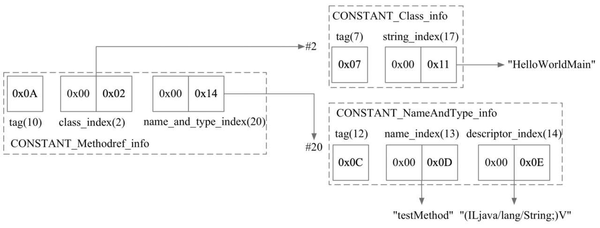
从JDK1.7开始，为了更好地支持动态语言调用，新增了3种常量池类型（CONSTANT_MethodType_info、CONSTANT_MethodHandle_info和CONSTANT_InvokeDynamic_info）。以CONSTANT_InvokeDynamic_info为例，CONSTANT_InvokeDynamic_info的主要作用是为invokedynamic指令提供启动引导方法，它的结构如下所示。
CONSTANT_InvokeDynamic_info {
u1 tag;
u2 bootstrap_method_attr_index;
u2 name_and_type_index;
}
public void foo() {
new Thread (()-> {
System.out.println("hello");
}).start();
}
javap输出的常量池的部分如下：
Constant pool:
#3 = InvokeDynamic #0:#25 // #0:run:()Ljava/lang/Runnable;
...
#25 = NameAndType #37:#38 // run:()Ljava/lang/Runnable;
BootstrapMethods:
0: #22 invokestatic java/lang/invoke/LambdaMetafactory.metafactory:(Ljava/lang/
invoke/MethodHandles$Lookup; Ljava/lang/String; Ljava/lang/invoke/MethodType; Ljava/
lang/invoke/MethodType; Ljava/lang/invoke/MethodHandle; Ljava/lang/invoke/MethodType; )
Ljava/lang/invoke/CallSite;
Method arguments:
#23 ()V
#24 invokestatic HelloWorldMain.lambda$foo$0:()V
#23 ()V
整体的结构如图1-22所示。
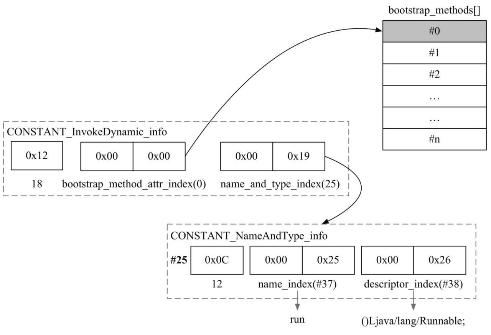
紧随常量池之后的区域是访问标记（Access flags），用来标识一个类为final、abstract等，由两个字节表示，总共有16个标记位可供使用，目前只使用了其中的8个
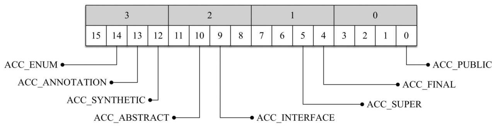
完整的访问标记含义如表1-3所示。
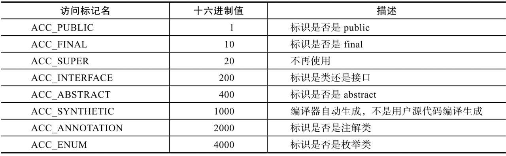
本例中类的访问标记为0 x0021（ACC_SUPER | ACC_PUBLIC），表示是一个public的类，如图1-24所示。
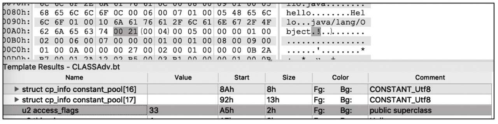
这些访问标记并不是可以随意组合的，比如ACC_PUBLIC、ACC_PRIVATE、ACC_PROTECTED不能同时设置，ACC_FINAL和ACC_ABSTRACT也不能同时设置，否则会违背语义。更多的规则可以在javac源码的com.sun.tools.javac.comp.Check.java文件中找到。
这三部分用来确定类的继承关系，this_class表示类索引，super_name表示直接父类的索引，interfaces表示类或者接口的直接父接口。
类索引是一个指向常量池的索引，表示类或者接口的名字，用两字节表示，以下面的代码清单1-5为例。
public class Hello {
public static void main(String[] args) {
}
}
Constant pool:
// ...
#2 = Class #13 // Hello
// ...
#13 = Utf8 Hello
本例中this_class为0x0002，指向常量池中下标为2的元素，这个元素是CONSTANT_Class_info类型，它的name_index指向常量池中下标为13、类型为CONSTANT_Utf8_info的元素，表示类名为“Hello”，如图1-25所示。
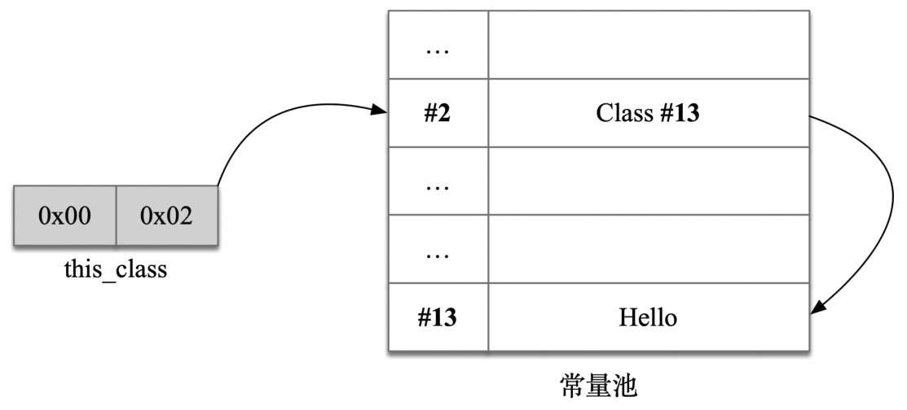
类中定义的字段会被存储到这个集合中，包括静态和非静态的字段，它的结构可以用下面的伪代码表示。
{
u2 fields_count;
field_info fields[fields_count];
}
字段表也是一个变长的结构，fields_count表示field的数量，接下来的fields表示字段集合，共有fields_count个，每一个字段用field_info结构表示，稍后会进行介绍。
每个字段field_info的格式如下所示。
field_info {
u2 access_flags;
u2 name_index;
u2 descriptor_index;
u2 attributes_count;
attribute_info attributes[attributes_count];
}
字段结构分为4个部分：
如图1-26所示。
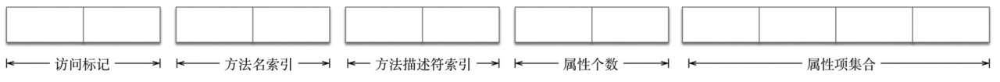
与类一样，字段也拥有自己的字段访问标记，但字段的访问标记更丰富，共有9种，详细的列表如表1-4所示。
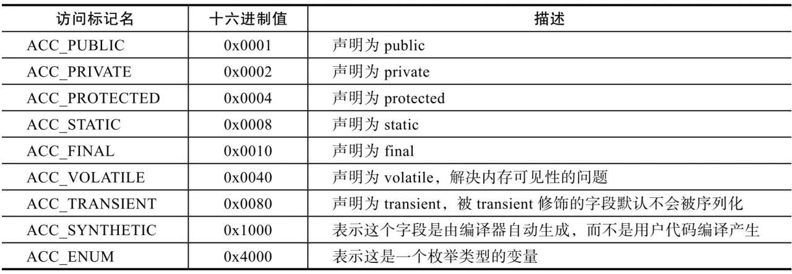
如果在类中定义了字段public static final int DEFAULT_SIZE = 128，编译后DEFAULT_SIZE字段在类文件中存储的访问标记值为0 x0019，则它的访问标记为ACC_PUBLIC |ACC_STATIC | ACC_FINAL，表示它是一个public static final类型的变量，如图1-27所示。
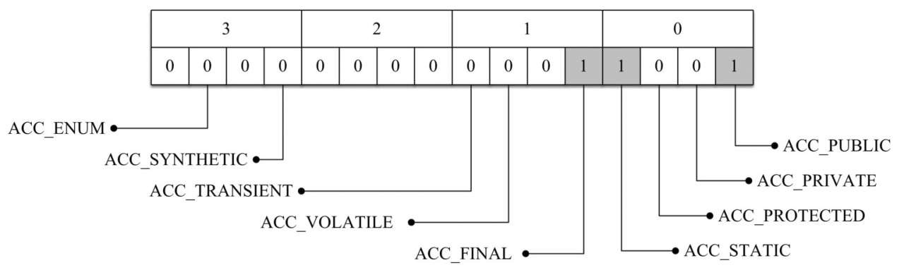
同之前介绍的类访问标记一样，字段访问标记并不是可以随意组合的，比如ACC_FINAL和ACC_VOLATILE也不能同时设置，否则会违背语义。
字段描述符（field descriptor）用来表示某个field的类型，在JVM中定义一个int类型的字段时，类文件中存储的类型并不是字符串int，而是更精简的字母I。
根据类型的不同，字段描述符分为三大类。
完整的字段类型描述符映射表如表1-5所示。
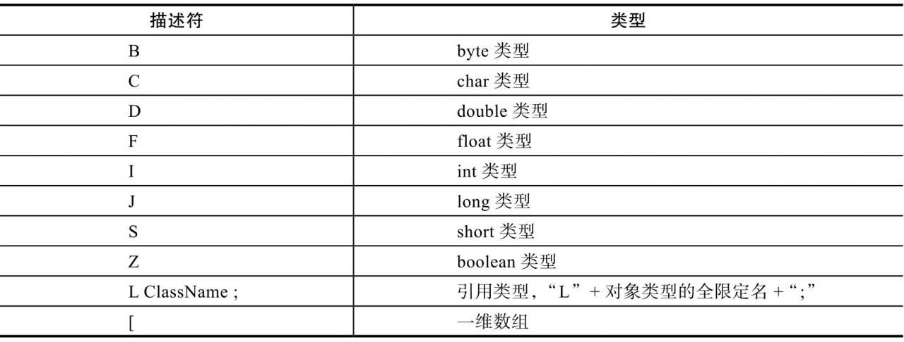
与字段相关的属性包括ConstantValue、Synthetic 、Signature、Deprecated、Runtime-Visible Annotations和RuntimeInvisibleAnnotations这6个，比较常见的是ConstantValue属性，用来表示一个常量字段的值。
方法表的作用与前面介绍的字段表非常类似，类中定义的方法会被存储在这里，方法表也是一个变长结构，如下所示。
{
u2 methods_count;
method_info methods[methods_count];
}
其中methods_count表示方法的数量，接下来的methods表示方法的集合，共有methods_count个，每一个方法用method_info结构表示。
对于每个方法method_info而言，它的结构如下所示。
method_info {
u2 access_flags;
u2 name_index;
u2 descriptor_index;
u2 attributes_count;
attribute_info attributes[attributes_count];
}
方法method_info结构分为四部分：
field_info的结构如图1-28所示。

方法的访问标记比类和字段的访问标记类型更丰富，一共有12种，完整的映射表如表1-6所示。
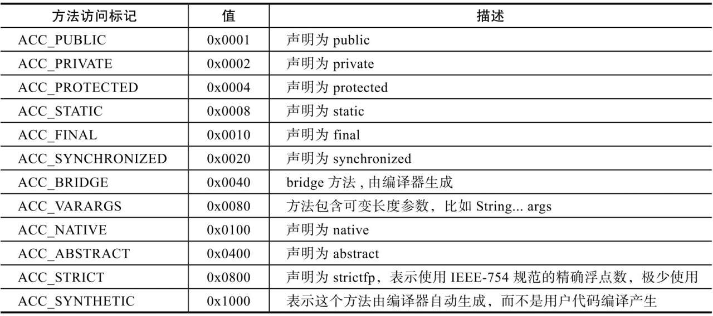
以下面的代码为例：
private static synchronized void foo() {
}
生成的类文件中，foo方法的访问标记等于0 x002a（ACC_PRIVATE |ACC_STATIC|ACC_SYNCHRONIZED），表示这是一个private staticsynchronized的方法，如图1-29所示。
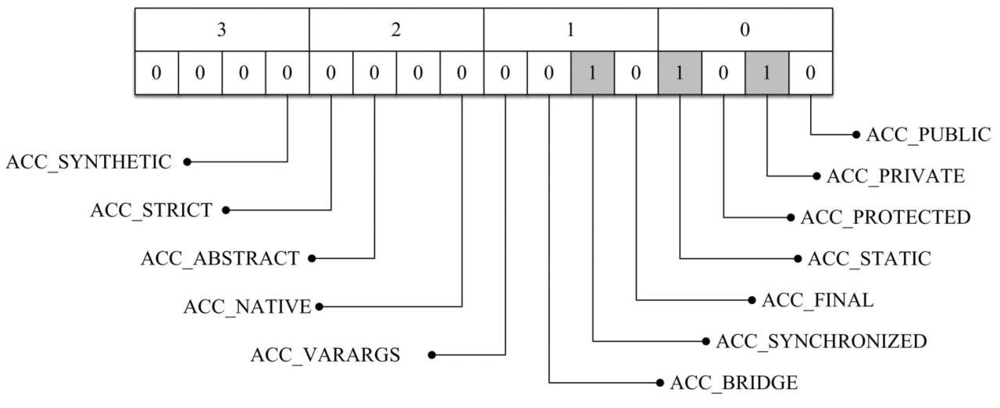
同前面的字段访问标记一样，不是所有的方法访问标记都可以随意组合设置，比如ACC_ABSTRACT、ACC_FINAL在方法描述符中不能同时设置，ACC_ABSTRACT和ACC_SYNCHRONIZED也不能同时设置。
紧随方法访问标记的是方法名索引name_index，指向常量池中CONSTANT_Utf8_info类型的字符串常量，比如有这样一个方法定义private voidfoo（），编译器会生成一个类型为CONSTANT_Utf8_info的字符串常量项，里面存储了“foo”，方法名索引name_index指向了这个常量项。
方法描述符索引descriptor_index也是指向常量池中类型为CONSTANT_Utf8_info的字符串常量项。方法描述符用来表示一个方法所需的参数和返回值，格式如下：
(参数1类型 参数2类型 参数3类型 ...)返回值类型
比如，方法Object foo（int i, double d, Thread t）的描述符为“（IDLjava/lang/Thread;）Ljava/lang/Object;”，其中“I”表示第一个参数i的参数类型int,“D”表示第二个参数d的类型double,“Ljava/lang/Thread;”表示第三个参数t的类型Thread,“Ljava/lang/Object;”表示返回值类型Object，如图1-30所示。
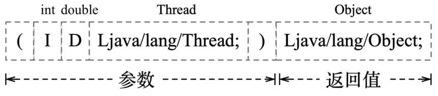
方法属性表是method_info结构的最后一部分。前面介绍了方法的访问标记和方法签名，还有一些重要的信息没有出现，如方法声明抛出的异常，方法的字节码，方法是否被标记为deprecated等，属性表就是用来存储这些信息的。与方法相关的属性有很多，其中比较重要的是Code和Exceptions属性，其中Code属性存放方法体的字节码指令，Exceptions属性用于存储方法声明抛出的异常。
在方法表之后的结构是class文件的最后一部分——属性表。属性出现的地方比较广泛，不只出现在字段和方法中，在顶层的class文件中也会出现。相比于常量池只有14种固定的类型，属性表的类型更加灵活，不同的虚拟机实现厂商可以自定义属性，属性表的结构如下所示。
{
u2 attributes_count;
attribute_info attributes[attributes_count];
}
与其他结构类似，属性表使用两个字节表示属性的个数attributes_count，接下来是若干个属性项的集合，可以看作是一个数组，数组的每一项都是一个属性项attribute_info，数组的大小为attributes_count。每个属性项的attribute_info的结构如下所示。
attribute_info{
u2 attribute_name_index;
u4 attribute_length;
u1 info[attribute_length];
}
attribute_name_index是指向常量池的索引，根据这个索引可以得到attribute的名字，接下来的两部分表示info数组的长度和具体byte数组的内容。
虚拟机预定义了20多种属性，下面我们挑选字段表相关的ConstantValue属性和方法表相关的Code属性进行介绍。
ConstantValue属性出现在字段field_info中，用来表示静态变量的初始值，它的结构如下所示。
ConstantValue_attribute {
u2 attribute_name_index;
u4 attribute_length;
u2 constantvalue_index;
}
其中attribute_name_index是指向常量池中值为“ConstantValue”的字符串常量项，attribute_length值固定为2，因为接下来的具体内容只会有两个字节大小。constantvalue_index指向常量池中具体的常量值索引，根据变量的类型不同，constantvalue_index指向不同的常量项。如果变量为long类型，则constantvalue_index指向CONSTANT_Long_info类型的常量项。
以代码public static final int DEFAULT_SIZE = 128为例，字段对应的class文件如图1-31高亮部分所示。
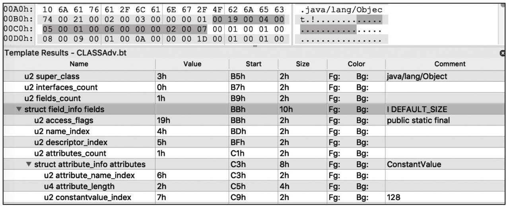
它对应的字段结构如图1-32所示。
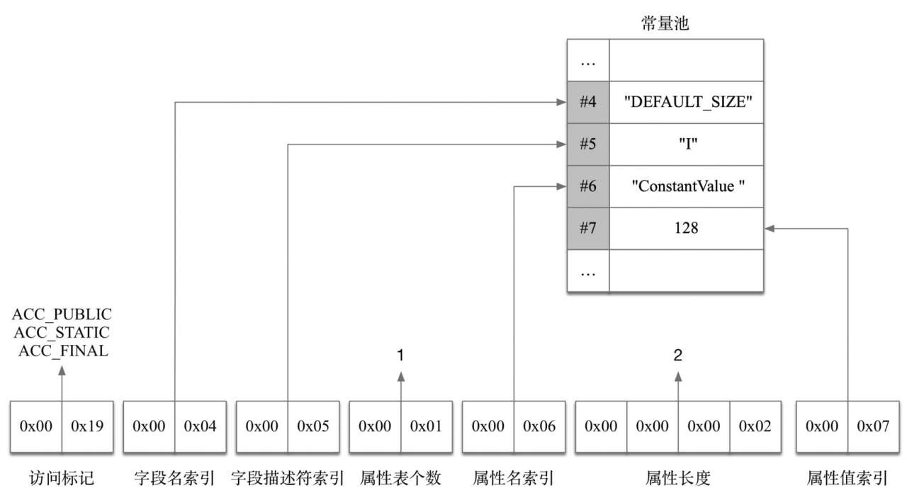
Code属性是类文件中最重要的组成部分，它包含方法的字节码，除native和abstract方法以外，每个method都有且仅有一个Code属性，它的结构如下。
Code_attribute {
u2 attribute_name_index;
u4 attribute_length;
u2 max_stack;
u2 max_locals;
u4 code_length;
u1 code[code_length];
u2 exception_table_length;
{ u2 start_pc;
u2 end_pc;
u2 handler_pc;
u2 catch_type;
} exception_table[exception_table_length];
u2 attributes_count;
attribute_info attributes[attributes_count];
}
下面开始介绍Code属性表的各个字段含义。
属性名索引（attribute_name_index）占2个字节，指向常量池中CONSTANT_Utf8_info常量，表示属性的名字，比如这里对应的常量池的字符串常量“Code”。
属性长度（attribute_length）占用2个字节，表示属性值长度大小。
max_stack表示操作数栈的最大深度，方法执行的任意期间操作数栈的深度都不会超过这个值。它的计算规则是：有入栈的指令stack增加，有出栈的指令stack减少，在整个过程中stack的最大值就是max_stack的值，增加和减少的值一般都是1，但也有例外：LONG和DOUBLE相关的指令入栈stack会增加2 , VOID相关的指令则为0。
max_locals表示局部变量表的大小，它的值并不等于方法中所有局部变量的数量之和。当一个局部作用域结束，它内部的局部变量占用的位置就可以被接下来的局部变量复用了。
code_length和code用来表示字节码相关的信息。其中，code_length表示字节码指令的长度，占用4个字节；code是一个长度为code_length的字节数组，存储真正的字节码指令。
exception_table_length和exception_table用来表示代码内部的异常表信息，如我们熟知的try-catch语法就会生成对应的异常表。exception_table_length表示接下来exception_table数组的长度，每个异常项包含四个部分，可以用下面的结构表示。
{
u2 start_pc;
u2 end_pc;
u2 handler_pc;
u2 catch_type;
}
其中start_pc、end_pc、handler_pc都是指向code字节数组的索引值，start_pc和end_pc表示异常处理器覆盖的字节码开始和结束的位置，是左闭右开区间[start_pc, end_pc），包含start_pc，不包含end_pc。handler_pc表示异常处理handler在code字节数组的起始位置，异常被捕获以后该跳转到何处继续执行。catch_type表示需要处理的catch的异常类型是什么，它用两个字节表示，指向常量池中类型为CONSTANT_Class_info的常量项。如果catch_type等于0，则表示可处理任意异常，可用来实现finally语义。当JVM执行到这个方法 [start_pc, end_pc）范围内的字节码发生异常时，如果发生的异常是这个catch_type对应的异常类或者它的子类，则跳转到code字节数组handler_pc处继续处理。
attributes_count和attributes[] 用来表示Code属性相关的附属属性，Java虚拟机规定Code属性只能包含这四种可选属性：LineNumberTable、LocalVariableTable、LocalVariableTypeTable、StackMapTable。以LineNumberTable为例，LineNumberTable用来存放源码行号和字节码偏移量之间的对应关系，属于调试信息，不是类文件运行的必需属性，默认情况下都会生成。如果没有这个属性，那么在调试时就没有办法在源码中设置断点，也没有办法在代码抛出异常时在错误堆栈中显示出错的行号信息。
接下来以代码清单1-6为例来看Code属性。
public class HelloWorldMain {
public static void main(String[] args) {
try {
foo();
} catch (NullPointerException e) {
System.out.println(e);
} catch (IOException e) {
System.out.println(e);
}
try {
foo();
} catch (Exception e) {
System.out.println(e);
}
}
public static void foo() throws IOException {
}
}
编译后使用十六进制工具查看Code区域，如图1-33所示。
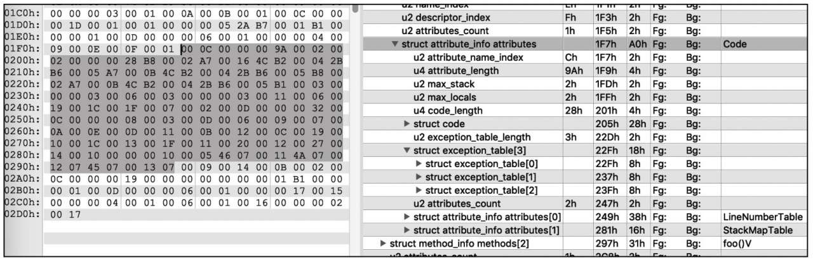
其中attribute_name_index为0 x0C，指向常量池中下标为12的字符串“Code”。attribute_length等于154（0x9A），表示属性值的长度大小。max_stack和max_locals都等于2，表示最大栈深度和局部变量表的大小都等于2 , code_length等于40（0x28），表示接下来code字节数组的长度为40。exception_table_length等于3（0x03），表示接下来会有3个异常表项目。最后的attributes_count为2，表示接下来会有2个相关的属性项，这里是LineNumberTable和StackMapTable。根据前面的介绍，可以画出的Code属性结构如图1-34所示。
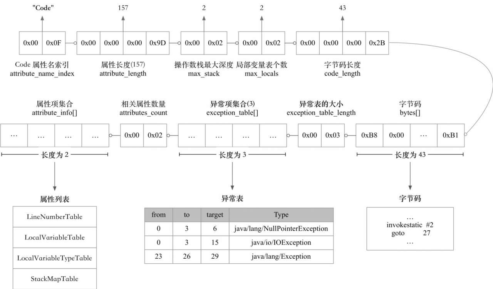
Copyright © 2015 Powered by MWeb, Theme used GitHub CSS.